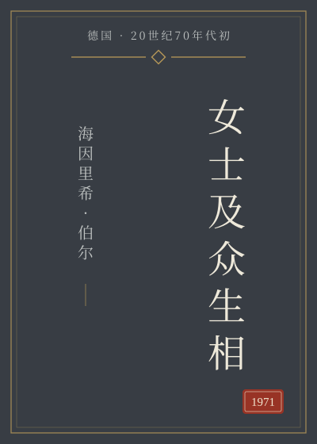
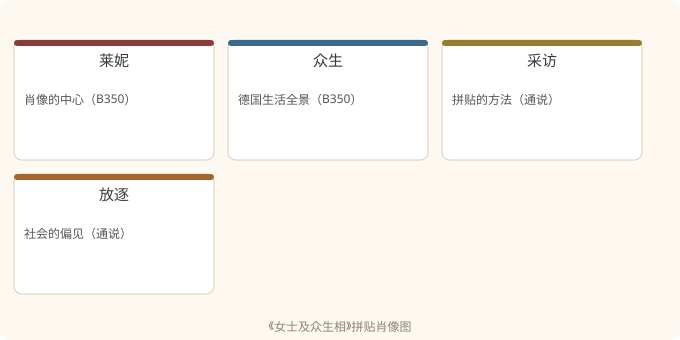

女士及众生相
一、基本信息
| 作者 | 海因里希·伯尔 |
|---|---|
| 成书/出版 | 1971年（Britannica B350：Group Portrait with Lady (1971)——'his longest novel'） Heinrich Boll — Encyclopaedia Britannica（百科全书） |
| 国别/地区 | 德国 |
| 时代 | 现当代 · 20世纪70年代初 |
| 体裁 | 长篇小说 |
| 语言 | 德语 |

《女士及众生相》拼贴肖像图（主题·结构图）
二、创作背景
Britannica（B350）：Group Portrait with Lady——'his longest novel'——'a panorama of German life'（德国生活全景）——通过莱妮·普法伊弗尔周围的人。
Britannica（B350）：伯尔——1972诺奖；'rubble literature'代表；'the eras leading humanist interpreter of Germanys WWII experience'。
题材（通说待核）：以'采访拼贴'还原一个普通女性的一生。
三、内容脉络
（通说待核——B350未载剧情）叙述者通过采访莱妮周围的人拼出她的肖像。
（通说待核）莱妮：被社会放逐却坚守人性的女性。
四、主要人物表
| 人物 | 身份 | 说明 |
|---|---|---|
| 莱妮·普法伊弗尔 | 女主人公 | （B350：Leni Pfeiffer） |
| 叙述者 | 采访者 | （通说待核，B350未载） |
五、主题与艺术特点
- 德国生活的全景（B350：a panorama of German life）。
- '众生相'的集体叙事（书名语境）。
- 个人责任与历史（B350：personal responsibility）。
六、影响与评论
- Britannica：1972年诺贝尔文学奖（B350）。
Heinrich Boll — Encyclopaedia Britannica（百科全书） - Britannica：'his longest novel'（B350）。
Heinrich Boll — Encyclopaedia Britannica（百科全书）
七、阅读建议
难点
- 采访拼贴文体。
- 德国20世纪史（一战至70年代——通说待核）。
- 《女士及众生相》中译名（《以妇女为中心的群像》两说——通说待核）。
- 德文原版。
伯尔长篇收官；与《小丑之见》对读。
八、待核实
- 莱妮·普法伊弗尔人名核对（B350拼写）。
- 1971年出版细节待核。
- '采访拼贴'结构待核。
本页主要来源
相关作品：小丑之见丧失名誉的卡塔琳娜·布鲁姆雷雨
海因里希·伯尔的其他收录作品：小丑之见丧失名誉的卡塔琳娜·布鲁姆女士及众生相